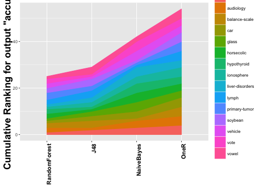

plotCumulativeRank(testMultiple, grayscale = FALSE)
This function builds an area plot from a testMultiple object displaying the cumulative value for each method for all the evaluated problems. The value for the rankings is obtained from the Friedman test independently of the scope of the test (control or pairwise).
# First we create an experiment from the wekaExperiment problem and prepare # it to apply the test: experiment <- expCreate(wekaExperiment, name="test", parameter="fold") experiment <- expReduce(experiment, "fold", mean) experiment <- expSubset(experiment, list(featureSelection = "no")) experiment <- expInstantiate(experiment, removeUnary=TRUE) # Then we perform a Friedman test included ina a testMultipleControl # test procedure test <- testMultipleControl(experiment, "accuracy") # Finally we obtain the plot plotCumulativeRank(test)
[1] "Cumulative Ranking for Var accuracy"